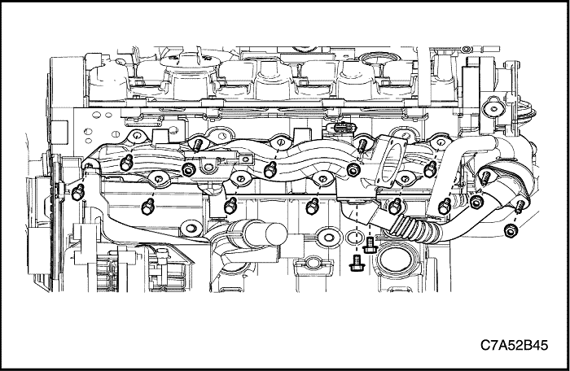
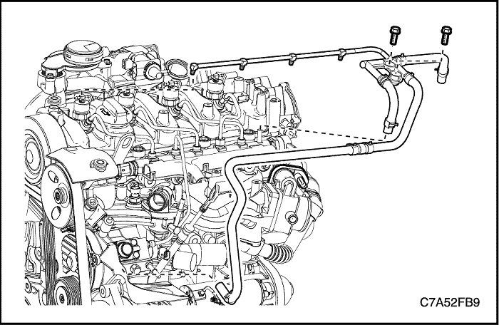
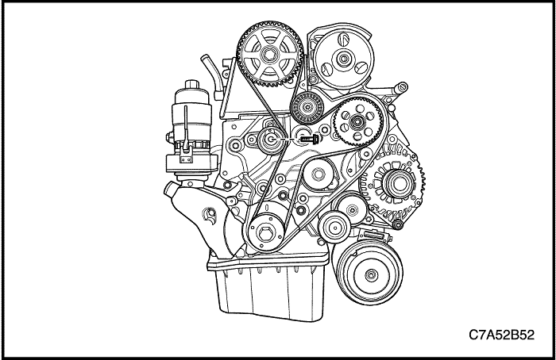
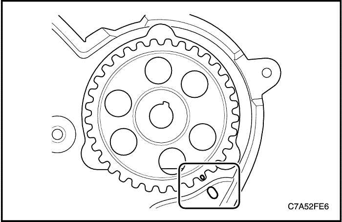

MANTENIMIENTO Y REPARACIÓN
SERVICIO EN VEHÍCULO


Tapa embellecedora
Procedimiento de desmontaje y montaje
- Quite las tuercas de la tapa embellecedora.
- Retire la tapa embellecedora.
Apretar
Apriete las tuercas de la tapa embellecedora hasta 8 N• m (70,8 lb-pulg.).
Elemento del filtro de aire
Procedimiento de desmontaje y montaje
- Desmonte el alojamiento superior del filtro del aire.
- Sustituya el elemento de filtro del aire.
Aviso: Antes de sustituirlo por uno nuevo, compruebe el intervalo de mantenimiento y la calidad del elemento del filtro del aire.
Apretar
Apriete los tornillos de la carcasa superior del filtro del aire hasta 2 N•m (17,7 lb-pulg.).
Sistema de aire de carga
Procedimiento de desmontaje
- Desconecte el cable negativo de la batería.
- Retire la tapa embellecedora. Consulte el apartado “"Tapa embellecedora" ” de esta sección.
- Desconecte el conector del sensor MAF (flujo de aire másico).
- Quite los tornillos del conjunto del filtro del aire.
- Quite el tornillo y la abrazadera del conducto de entrada del turbocompresor.
- Desmonte el conjunto del filtro del aire y el conducto del turbocompresor.
- Quite los tornillos del tubo de entrada del refrigerador de aire de carga.
- Desmonte el tubo de entrada del refrigerador de aire de carga.
- Desconecte el manguito y la abrazadera de PCV
- Desmonte el codo de entrada del turbocompresor.
- Desmonte el conducto de salida del turbocompresor.
- Desmonte las abrazaderas de entrada/salida del refrigerador de aire de carga y la abrazadera lateral del ETC (control eléctrico de la mariposa).
- Desmonte los manguitos de entrada/salida del refrigerador de aire de carga.
procedimiento de montaje
- Monte los manguitos de entrada/salida del refrigerador de aire de carga.
- Monte el conducto de salida y el codo de entrada del turbocompresor.
- Monte el tubo de entrada del refrigerador de aire de carga.
Apretar
Apriete los tornillos del tubo de entrada del refrigerador de aire de carga hasta 8 N•m (70,8 lb-pulg.).
- Monte el conjunto del filtro del aire y el conducto de entrada del turbocompresor.
Apretar
-
- Apriete los tornillos del conjunto del filtro del aire hasta 6 N•m (53 lb-pulg.).
- Apriete el tornillo del conducto de entrada del turbocompresor hasta 3 N•m (26,6 lb-pulg.).
Refrigerador de aire de carga
Procedimiento de desmontaje
- Descargue el sistema de A/A (aire acondicionado), si está equipado.
- Desmonte la guía de la rejilla del radiador. Consulte la Sección 9R, Parte delantera de la carrocería.
- Desmonte la rejilla del radiador. Consulte la Sección 9R, Parte delantera de la carrocería.
- Desmonte la cubierta inferior del motor. Consulte la Sección 9N, Bastidor y bajos de la carrocería.
- Desmonte el soporte de cierre principal del capó. Consulte la Sección 9R, Parte delantera de la carrocería.
- Desmonte los manguitos de entrada/salida del refrigerador de aire de carga. Consulte el apartado “"Sistema de aire de carga" ” de esta sección.
- Desmonte el condensador del A/A del radiador. Consulte la Sección 7B, Sistema de calefacción, ventilación y aire acondicionado de control manual.
- Desmonte el soporte superior del radiador.
- Quite los tornillos del refrigerador de aire de carga.
- Desmonte el refrigerador de aire de carga.
procedimiento de montaje
- Monte el refrigerador de aire de carga en el radiador.
- Coloque los tornillos del refrigerador de aire de carga.
- Monte el soporte superior del radiador.
Apretar
-
- Apriete los tornillos del refrigerador de aire de carga hasta 8,5 N•m (75.2 lb-pulg.).
- Apriete los tornillos del soporte superior del radiador hasta 20 N•m (14,8 lb-pie).
Válvula y adaptador de PCV
Procedimiento de desmontaje
- Desconecte el cable negativo de la batería.
- Retire la tapa embellecedora. Consulte el apartado “"Tapa embellecedora" ” de esta sección.
- Desmonte los conductos y manguitos del sistema de aire de carga. Consulte el apartado “"Sistema de aire de carga" ” de esta sección.
- Desenchufe el conector del solenoide de EGR y los manguitos de vacío de entrada/salida del solenoide de EGR.
- Desconecte el manguito de PCV del codo de entrada del turbocompresor.
- Quite los tornillos de la válvula de PCV del adaptador de válvula de PCV.
- Desmonte la válvula de PCV.
- Desmonte el escudo térmico del turbocompresor. Consulte la Sección 1F1, Controles del motor - 2.0 Diesel.
- Desmonte el adaptador de válvula de PCV y la junta del adaptador.
procedimiento de montaje
- Monte el adaptador de válvula de PCV con una nueva junta.
Apretar
Apriete los tornillos del adaptador de válvula de PCV hasta 11 N•m (97,4 lb-pulg.).
- Monte la válvula de PCV.
Apretar
Apriete los tornillos de la válvula de PCV hasta 11 N•m (97,4 lb-pulg.).
Correa de accesorios y tensor
Herramientas necesarias
Extractor/instalador de la correa de accesorios EN-48253
Extractor/instalador del tensor EN-48300.
Pasador de sujeción del muelle del tensor EN-48952
Procedimiento de desmontaje
- Desmonte el conjunto de filtro del aire. Consulte el apartado “"Sistema de aire de carga" ” de esta sección.
- Levante y apoye el vehículo adecuadamente.
- Desmonte la rueda delantera derecha. Consulte la Sección 2E, Neumáticos y ruedas.
- Desmonte el protector delantero del motor en la posición de la rueda delantera derecha. Consulte la Sección 9R, Parte delantera de la carrocería.
- Monte el extractor/instalador de la correa de accesorios EN-48253 en la guía de la palanca del tensor y gire el tensor en el sentido de las agujas del reloj.
- Gire el tensor completamente y, a la vez, introduzca el pasador de sujeción del muelle del tensor EN-48952 en el orificio del pasador del tensor.
- Desmonte la correa de accesorios.
- Desmonte el tensor con ayuda del extractor/instalador EN-48300.
procedimiento de montaje
- Coloque el tornillo del tensor manualmente.
Aviso: No deje caer el tensor, apriete el tornillo ligeramente con las manos. En todo momento, el pasador (a) está desviado del orificio del pasador del tensor (B).
Precaución: Si se gira en exceso el tornillo del tensor utilizando alguna herramienta, el pasador y el soporte del tensor podría desgastarse.
- Monte la correa de accesorios.
- Monte el extractor/instalador de la correa de accesorios EN-48253 en la guía de la palanca de tensión y gire el tensor en el sentido contrario a las agujas del reloj.
Aviso: El pasador del tensor (a) se introduce en el orificio del pasador del tensor (b).
- Monte el tensor con ayuda del extractor/instalador EN-48300.
Apretar
Apriete el tornillo de fijación del tensor hasta 48 N•m (35,4 lb-pie).
- Desmonte el pasador de sujeción del muelle del tensor EN-48952 con ayuda del extractor/instalador EN-48253.
Colector de admisión
Procedimiento de desmontaje
- Desconecte el cable negativo de la batería.
- Retire la tapa embellecedora. Consulte el apartado “"Tapa embellecedora" ” de esta sección.
- Desmonte los conductos y manguitos del sistema de aire de carga. Consulte el apartado “"Sistema de aire de carga" ” de esta sección.

- Desconecte el manguito inferior del radiador y extraiga el refrigerante. Consulte la Sección 1D1, "Refrigeración del motor - 2.0 Diesel.
- Desmonte la correa de accesorios. Consulte el apartado “"Correa de accesorios y tensor" ” de esta sección.
- Desmonte de la bomba de inyección de combustible, el tubo de combustible que va a la bomba.
- Desmonte el elemento de sujeción de la bomba de la dirección asistida y tire de él hacia la izquierda.
- Retire del colector de admisión el manguito de refrigerante.
- Desmonte el manguito superior del radiador.
- Desmonte el manguito de retorno de la bomba de inyección.
- Desmonte el tubo del indicador del nivel de aceite.
- Desmonte el tubo de combustible que va a la rampa de inyectores común y la bomba de inyección de combustible. Consulte la Sección 1F1, Controles del motor - 2.0 Diesel.
- Quite el tornillo de fijación del conjunto de empalmes del cableado del colector de admisión.
- Quite los tornillos de fijación de la caja de fusibles de la bujía de precalentamiento.
- Desmonte el cableado del motor.
- Desenchufe el conector del sensor de presión de la rampa de inyectores común.
- Desenchufe el conector del CTS.
- Desenchufe el conector de la bomba de inyección.
- Desenchufe el conector del alternador.
- Desenchufe el conector del compresor del A/A.
- Desenchufe el conector del cableado del solenoide del motor de arranque.
- Desenchufe los conectores del ventilador de refrigeración.
- Desenchufe el conector del sensor T-MAP.
- Desenchufe el conector del CMP.
- Desenchufe el conector del cuerpo del ETC.
- Desenchufe el conector del regulador de la rampa de inyectores común.
- Desmonte la guía del cableado del motor.

- Desmonte el manguito de derivación del refrigerante.
- Desmonte el tubo de salida de refrigerante del EGR.
- Desmonte el colector de admisión con su junta.
procedimiento de montaje
- Monte el colector de admisión con una nueva junta.
- Monte el tubo de salida de refrigerante del EGR.
Apretar
-
- Apriete los tornillos y las tuercas del colector de admisión hasta 23 N•m (17 lb-pie).
- Apriete los tornillos y las tuercas del tubo de salida del refrigerador del EGR hasta 20 N•m (14,8 lb-pie).
- Monte el cableado del motor.
- coloque los tornillos de fijación de la caja de fusibles de la bujía de precalentamiento.
- Coloque el tornillo de fijación del conjunto de empalmes del cableado del motor en el colector de admisión.
- Monte el tubo de combustible que va a la rampa de inyectores común y la bomba de inyección de combustible. Consulte la Sección 1F1, Controles del motor - 2.0 Diesel.
- Monte el tubo del indicador del nivel de aceite.
- Monte la bomba de la dirección asistida.
- Monte el tubo de combustible que va a la bomba de inyección de combustible.
Apretar
-
- Apriete los tornillos de la caja de fusibles de la bujía de precalentamiento hasta 10 N•m (88,5 lb-pulg.).
- Apriete el tornillo del conjunto de empalmes del motor hasta 15 N•m (11,1 lb-pie).
- Apriete el tubo que va a la rampa de inyectores común hasta 20 N•m (14,8 lb-pie).
- Apriete el tornillo de fijación del tubo de combustible a la rampa de inyectores común hasta 10 N•m (88,5 lb-pulg.).
- Apriete los tornillos del tubo del indicador del nivel de aceite hasta 11 N•m (97,4 lb-pulg.).
- Apriete los tornillos de la bomba de la dirección asistida hasta 25 N•m (18,4 lb-pie).
- Apriete el tornillo de fijación del tubo de combustible a la bomba de inyección (colector de admisión) hasta 9 N•m (79,7 lb-pulg.).
- Apriete el tornillo de fijación del tubo de combustible a la bomba de inyección hasta 25 N•m (18,4 lb-pie).
Colector de escape
Procedimiento de desmontaje
Precaución: No desmonte el colector de escape cuando las piezas estén calientes.
- Desconecte el cable negativo de la batería.
- Retire la tapa embellecedora. Consulte el apartado “"Tapa embellecedora" ” de esta sección.
- Desmonte los conductos y manguitos del sistema de aire de carga. Consulte el apartado “"Sistema de aire de carga" ” de esta sección.
- Desmonte la válvula y el adaptador de PCV. Consulte el apartado “"Válvula y adaptador de PCV"” de esta sección.
- Desmonte el escudo térmico del escape.
- Desmonte el precatalizador. Consulte la Sección 1G1, Sistema de escape del motor - 2.0 Diesel.
- Desmonte el turbocompresor del colector de escape. Consulte la Sección 1F1, Controles del motor - 2.0 Diesel.
- Desmonte el tubo de entrada del refrigerador de EGR de la válvula EGR con su junta.
- Desmonte el colector de escape con el tubo de entrada del refrigerador de EGR.
- Desmonte el tubo de entrada del refrigerador de EGR del colector de escape.
procedimiento de montaje
- Monte el tubo de entrada del refrigerador de EGR en el colector de escape.
- Monte el colector de escape en la culata con una nueva junta.
- Monte el tubo de entrada del refrigerador de EGR en la válvula EGR con una nueva junta.
Apretar
-
- Apriete las tuercas del tubo de entrada del refrigerador de EGR (al colector de escape) hasta 33 N•m (24,3 lb-pie).
- Apriete las tuercas del colector de escape hasta 33 N•m (24,3 lb-pie).
- Apriete los tornillos del tubo de entrada del refrigerador de EGR (al la válvula EGR) hasta 20 N•m (14,8 lb-pie).
- Monte el escudo térmico del colector de escape.
Apretar
Apriete el tornillo y las tuercas del escudo térmico del colector de escape hasta 20 N•m (14,8 lb-pie).
Tapa de la culata
Procedimiento de desmontaje
- Desconecte el cable negativo de la batería.
- Retire la tapa embellecedora. Consulte el apartado “"Tapa embellecedora" ” de esta sección.
- Desmonte los conductos y manguitos del sistema de aire de carga. Consulte el apartado “"Sistema de aire de carga" ” de esta sección.
- Desmonte la válvula y el adaptador de PCV. Consulte el apartado “"Válvula y adaptador de PCV"” de esta sección.

- Desmonte el tubo de combustible que va al inyector, ubicado entre la rampa de inyectores común y el inyector. Consulte la Sección 1F1, Controles del motor - 2.0 Diesel.
- Desmonte el conjunto de la tubería de retorno de combustible. Consulte la Sección 1F1, Controles del motor - 2.0 Diesel.
- Desmonte el soporte de la tapa embellecedora junto con el tubo de retorno de refrigerante de la cámara de compensación.
- Desmonte la tapa superior de la correa de distribución.
- Desenchufe el conector del CMP.
- Desmonte los inyectores. Consulte la Sección 1F1, Controles del motor - 2.0 Diesel.
- Desmonte la tapa de la culata con su junta.
procedimiento de limpieza
- Limpie la superficie de cierre de la tapa de la culata.
- Limpie la superficie de cierre de la culata.
- Limpie los tornillos de la tapa de la culata.
- Limpie los taladros de los tornillos de la tapa de la culata.
procedimiento de montaje
- Recubra con sellante (LOCTITE 5900) la superficie de la tapa delantera/trasera del árbol de levas.
- Monte la tapa de la culata con una nueva junta en la culata.
Apretar
Apriete los tornillos de la tapa de la culata hasta 12 N•m (8,9 lb-pie).
- Monte la tapa superior de la correa de distribución.
- Monte el soporte de la tapa embellecedora junto con el tubo de retorno de refrigerante en la cámara de compensación.
- Monte el conjunto de la tubería de retorno de combustible.
- Monte el tubo de combustible que va al inyector, ubicado entre la rampa de inyectores común y el inyector. Consulte la Sección 1F1, Controles del motor - 2.0 Diesel.
Apretar
-
- Apriete los tornillos de la tapa superior de la correa de distribución hasta 11 N•m (97,4 lb-pulg.).
- Apriete el tornillo de retención del tubo de retorno de refrigerante hasta 9 N•m (79,7 lb-pulg.).
- Apriete los tornillos de la caja de conexiones hasta 11 N•m (97,4 lb-pulg.).
- Apriete el tornillo del soporte de la tapa embellecedora hasta 11 N•m (97,4 lb-pulg.).
Sistema de correa de distribución
Herramientas necesarias
Fijación del soporte del conjunto motor DW 110-060
Ajustador de la correa de distribución EN-48245: Soporte del árbol de levas
Ajustador de la correa de distribución EN-48246: Soporte del cigüeñal
Procedimiento de desmontaje
- Desconecte el cable negativo de la batería.
- Retire la tapa embellecedora. Consulte el apartado “"Tapa embellecedora" ” de esta sección.
- Desmonte los conductos y manguitos del sistema de aire de carga. Consulte el apartado “"Sistema de aire de carga" ” de esta sección.
- Desmonte la correa de accesorios. Consulte el apartado “"Correa de accesorios y tensor" ” de esta sección.

Precaución: Eleve el motor lo suficiente como para levantar el peso del conjunto de fijación del motor, o puede provocar daños en la fijación o en el equipo de elevación.
- Sujete el conjunto del motor utilizando la fijación del soporte del conjunto motor DW 110-060.
- Desmonte el bloque de amortiguación de la fijación del motor. Consulte el apartado “"Conjunto de fijación del motor (lado derecho)" ” de esta sección.
- Desmonte la tapa superior de la correa de distribución.
- Desmonte la polea loca de la correa de accesorios.
- Desmonte el tensor. Consulte el apartado “"Correa de accesorios y tensor" ” de esta sección.
- Desmonte la polea del cigüeñal.
- Desmonte la tapa inferior de la correa de distribución.
- Desmonte el soporte de fijación del motor.

- Desmonte el tensor de la correa de distribución.
- Desmonte la correa de distribución.
- Desmonte el piñón del árbol de levas.

ajuste de la correa de distribución
- Desmonte la bomba de vacío. Consulte la Sección 1F1, Controles del motor - 2.0 Diesel.
- Gire el árbol de levas y alinee el orificio del punto superior.
- Gire el cigüeñal y alinee la marca del piñón del cigüeñal.
- Quite el tornillo (a) de la tapa del orificio del soporte de cigüeñal.
- Introduzca el soporte del cigüeñal EN-48246 en el orificio (b) para el soporte de cigüeñal.
Aviso: Gire levemente el piñón del cigüeñal a la vez que introduce el soporte.
- Instale el soporte del árbol de levas EN-48245 en la parte trasera (c) del árbol de levas.

- Alinee la marca del piñón con la marca de la tapa trasera de la correa de distribución.
- Instale el piñón del árbol de levas apretando el tornillo manualmente.
- Monte la correa de distribución.
- Monte el tensor de la correa de distribución apretando el tornillo manualmente.
- Gire la lengüeta para llave hexagonal (a) en el sentido contrario a las agujas del reloj para tensar la correa. Gire hasta que el punto quede alineado con la muesca (b).
- Una vez alineados, coloque el tornillo del tensor de la correa de distribución.
- Coloque el tornillo del piñón del árbol de levas.
Apretar
-
- Apriete el tornillo del tensor de la correa de distribución hasta 25 N•m (18,4 lb-pulg).
- Apriete el tornillo del piñón del árbol de levas hasta 133 N•m (98,1 lb-pulg.).
- Desmonte el soporte del árbol de levas EN-48245 y el soporte del cigüeñal EN-48246.
- Gire el cigüeñal en el sentido de las agujas de reloj más de 2 ciclos y, a continuación, compruebe la marca en el piñón del cigüeñal.
- Tras alinear la correa de distribución, coloque el tornillo de la tapa del orificio del soporte del cigüeñal.
Apretar
Apriete el tornillo de la tapa del orificio del soporte del cigüeñal 30 N•m (22,1 lb-pie).
Aviso: Si no está alineado con el punto TDC del cilindro nº 1, realice de nuevo el procedimiento que se describe arriba, desde el nº 4 al nº 10, hasta que quede alineado.
Precaución: Debido a que el ajuste de estas herramientas especiales está alineado con el punto TDC del cilindro nº1, si no está alineado, puede afectar al rendimiento y las emisiones del motor.
procedimiento de montaje
- Monte el soporte de fijación del motor.
- Monte la tapa inferior de la correa de distribución.
- Monte la polea del cigüeñal.
- Monte la polea loca de la correa de accesorios.
- Monte la tapa superior de la correa de distribución.
Apretar
-
- Apriete los tornillos del soporte de fijación del motor hasta 45 N•m (33,1 lb-pie).
- Apriete los tornillos de la tapa inferior de la correa de distribución hasta 11 N•m (97,4 lb-pie).
- Apriete los tornillos de la polea del cigüeñal hasta 34 N•m (25,1 lb-pie).
- Apriete el tornillo de la polea loca de la correa de accesorios hasta 52 N•m (38,4 lb-pie).
- Apriete los tornillos de la tapa superior de la correa de distribución hasta 11 N•m (97,4 lb-pulg.).
Culata y junta
Procedimiento de desmontaje
- Desconecte el cable negativo de la batería.
- Retire la tapa embellecedora. Consulte el apartado “"Tapa embellecedora" ” de esta sección.
- Desmonte los conductos y manguitos del sistema de aire de carga. Consulte el apartado “"Sistema de aire de carga" ” de esta sección.
- Desmonte la correa de accesorios. Consulte el apartado “"Correa de accesorios y tensor" ” de esta sección.
- Desmonte la tapa de la culata. Consulte el apartado “"Tapa de la culata" ” en esta sección.
- Desmonte la correa de distribución. Consulte el apartado “"Sistema de correa de distribución" ” de esta sección.
- Desmonte el tubo de combustible que va a la rampa de inyectores común y la bomba de inyección de combustible. Consulte la Sección 1F1, Controles del motor - 2.0 Diesel.
- Desmonte el elemento de sujeción de la bomba de la dirección asistida y tire de él hacia la izquierda.
- Quite el tornillo de apriete del conjunto de empalmes del cableado del motor.
- Desmonte el tubo del indicador del nivel de aceite.
- Desmonte el manguito superior del radiador de la caja del termostato.
- Desmonte los conectores del cableado del motor.
- Desmonte el tubo de entrada de aceite del cojinete de la rueda del turbocompresor.
- Desmonte el manguito de salida de aceite del cojinete de la rueda del turbocompresor.
- Desmonte del turbocompresor la abrazadera de apriete del precatalizador.
- Quite los tornillos de la culata.
- Desmonte el conjunto de la culata con su junta.
- Desmonte los colectores de admisión y escape del conjunto de la culata. Consulte los apartados "Colector de admisión" y "Colector de escape" de esta sección.
procedimiento de limpieza
- Limpie la superficie de la culata.
- Limpie la superficie del bloque del motor.
- Limpie los tornillos de la culata.
- Limpie los taladros de los tornillos del bloque motor.
Elija la junta.
- Alinee el punto muerto superior del pistón.
- Limpie la superficie de cierre del bloque de cilindros y el pistón.
- Mida el grosor de la prolongación del pistón con un reloj comparador.
- Repita el proceso de medición en los otros cilindros y saque el promedio de las prolongaciones de los pistones.
- Elija la junta de culata del cilindro por debajo de las especificaciones.
|
Prolongación de pistón (mm)
|
Grosor de junta (mm)
|
|
0,194 ~ 0,337
|
1.1
|
|
0,337 ~ 0,440
|
1.2
|
|
0,440 ~ 0,542
|
1.3
|
procedimiento de montaje
- Monte el conjunto de la culata con una nueva junta.
- Coloque los tornillos de apriete de la culata.
Apretar
Apriete los tornillos de la culata hasta 65 N•m (47,9 lb-pie). Use el medidor de par angular KM-470-B para apretar los tornillos de la culata otros 120 grados más 120 grados.
- Monte la abrazadera de apriete del precatalizador en el turbocompresor.
- Monte el tubo de entrada de aceite del cojinete de la rueda del turbocompresor.
Apretar
Apriete los tornillos del tubo de entrada de aceite del cojinete de la rueda del turbocompresor hasta 23 N•m(17 lb-pie).
- Coloque el tornillo de apriete del conjunto de empalmes del cableado del motor.
- Monte el elemento de sujeción de la bomba de la dirección asistida.
- Monte el tubo de combustible que va a la rampa de inyectores común y la bomba de inyección de combustible.
- Monte el tubo del indicador del nivel de aceite.
Apretar
-
- Apriete el tornillo del conjunto de empalmes del motor hasta 15 N•m (11,1 lb-pie).
- Apriete los tornillos de la bomba de la dirección asistida hasta 25 N•m (18,4 lb-pie).
- Apriete el tubo que va a la rampa de inyectores común hasta 20 N•m (14,8 lb-pie).
- Apriete el tornillo de fijación del tubo de combustible a la rampa de inyectores común hasta 10 N•m (88,5 lb-pulg.).
- Apriete los tornillos del tubo del indicador del nivel de aceite hasta 11 N•m (97,4 lb-pulg.).
Filtro y refrigerador de aceite del motor
Procedimiento de desmontaje
- Desconecte el cable negativo de la batería.
- Retire la tapa embellecedora. Consulte el apartado “"Tapa embellecedora" ” de esta sección.
- Desmonte los conductos y manguitos del sistema de aire de carga. Consulte el apartado “"Sistema de aire de carga" ” de esta sección.
- Desmonte el conjunto del filtro de combustible. Consulte la Sección 1F1, Controles del motor - 2.0 Diesel.
- Vacíe el aceite del motor.
- Quite el tornillo de drenaje de la carcasa del filtro del aceite y su arandela, y drene el aceite del motor en la carcasa del filtro del aceite.
- Desmonte el tapón del filtro del aceite con su junta tórica.
- Desmonte el filtro del aceite.
Aviso: Compruebe el intervalo de mantenimiento del aceite del motor y sustituya el filtro del aceite si es necesario. También puede comprobar la vida restante del aceite del motor en el scanner.
- Desmonte la placa del adaptador de la carcasa del filtro del aceite.
- Desmonte la carcasa del filtro del aceite con su junta tórica.
- Vacíe el refrigerante del motor. Consulte la Sección 1D1, "Refrigeración del motor - 2.0 Diesel.
- Quite el tornillo de ajuste de la carcasa del filtro del aceite.
- Desconecte los manguitos de entrada/salida del refrigerador de aceite del motor.
- Desmonte el refrigerador de aceite del motor con su junta tórica.
procedimiento de montaje
- Monte el refrigerador de aceite del motor con una nueva junta tórica.
- Conecte los manguitos de entrada/salida del refrigerador de aceite del motor.
Apretar
Apriete el tornillo de ajuste de la carcasa del filtro de aceite del motor hasta 50 N•m(36,9 lb-pie).
- Monte la carcasa del filtro del aceite con una nueva junta tórica.
- Monte la placa del adaptador de la carcasa del filtro del aceite.
Apretar
Apriete la placa del adaptador de la carcasa del filtro del aceite hasta 40 N•m(29,5 lb-pie).
- Monte el filtro de aceite del motor y su tapón con una nueva junta tórica.
Apretar
Apriete el tapón del filtro del aceite del motor hasta 25 N•m (18,4 lb-pie).
Importante: Si cambia el aceite del motor, ponga a cero la vida útil del aceite con el scanner.
Cárter de aceite
Procedimiento de desmontaje
- Desmonte la cubierta inferior del motor. Consulte la Sección 9N, Bastidor y bajos de la carrocería.
- Vacíe el aceite del motor.
- Desmonte los conductos y manguitos del sistema de aire de carga. Consulte la Sección 3B, Árbol de transmisión delantero.
- Quite los tornillos que unen la brida del cárter del aceite a la caja de cambios.
- Quite los tornillos inferiores del compresor del A/A.
- Desmonte el cárter del aceite.
procedimiento de limpieza
- Limpie la superficie de cierre del cárter del aceite.
- Limpie la superficie de cierre de la bancada del motor.
- Limpie los tornillos del cárter del aceite.
- Limpie los taladros de los tornillos de la bancada del motor.
procedimiento de montaje
Importante: Si cambia el aceite del motor, ponga a cero la vida útil del aceite con el scanner.
- Recubra de sellante (LOCTITE 5900) la superficie de cierre del cárter de aceite.
- Monte el cárter del aceite.
- Coloque los tornillos inferiores del compresor del A/A.
- Coloque los tornillos que unen la brida del cárter del aceite a la caja de cambios.
Apretar
-
- Apriete los tornillos del cárter de aceite hasta 11 N•m (97,4 lb-pulg.).
- Apriete los tornillos inferiores del compresor del A/A hasta 23 N•m (17 lb-pie).
- Apriete los tornillos de fijación de la brida del cárter del aceite a la caja de cambios hasta 50 N•m (36,9 lb-pie).
Malla filtrante del aceite
Procedimiento de desmontaje y montaje
Importante: Si cambia el aceite del motor, ponga a cero la vida útil del aceite con el scanner.
- Desmonte la cubierta inferior del motor. Consulte la Sección 9N, Bastidor y bajos de la carrocería.
- Vacíe el aceite del motor.
- Desmonte el cárter del aceite. Consulte el apartado “"Cárter del aceite"” de esta sección.
- Desmonte la malla filtrante del aceite con su arandela.
Apretar
-
- Apriete el tornillo de la malla filtrante del aceite hasta 11 N•m (97,4 lb-pulg.).
- Apriete el tornillo del soporte de la malla filtrante del aceite (tornillo exterior de la placa de asiento) hasta 35 N•m (25,8 lb-pie).
Equilibrador del cigüeñal
Procedimiento de desmontaje
- Desmonte la cubierta inferior del motor. Consulte la Sección 9N, Bastidor y bajos de la carrocería.
- Vacíe el aceite del motor.
- Desmonte el cárter del aceite. Consulte el apartado “"Cárter del aceite"” de esta sección.
- Desmonte la malla filtrante de aceite. Consulte el apartado “"Malla filtrante del aceite"” de esta sección.
- Desmonte el equilibrador del cigüeñal.
procedimiento de montaje
Importante: Si cambia el aceite del motor, ponga a cero la vida útil del aceite con el scanner.
- Monte el equilibrador del cigüeñal.
Apretar
Apriete los tornillos del equilibrador del cigüeñal hasta 55 N•m (46 lb-pie).
- Gire el cigüeñal y alinee los 3 puntos del equilibrador del cigüeñal en los engranajes.
Precaución: No desmonte el equilibrador del cigüeñal. Si lo hace, es posible que el motor y la carrocería vibren.
Bomba de aceite
Herramientas necesarias
Instalador del retén de aceite delantero del cigüeñal EN-48250
Procedimiento de desmontaje
- Desconecte el cable negativo de la batería.
- Retire la tapa embellecedora. Consulte el apartado “"Tapa embellecedora" ” de esta sección.
- Desmonte los conductos y manguitos del sistema de aire de carga. Consulte el apartado “"Sistema de aire de carga" ” de esta sección.
- Desmonte la correa de accesorios. Consulte el apartado “"Correa de accesorios y tensor" ” de esta sección.
- Desmonte el bloque de amortiguación de la fijación del motor. Consulte el apartado “"Conjunto de fijación del motor (lado derecho)" ” de esta sección.
- Vacíe el aceite del motor.
- Desmonte la correa de distribución. Consulte el apartado “"Sistema de correa de distribución" ” de esta sección.

- Desmonte la polea loca de la correa de distribución.
- Desmonte el piñón de la bomba de inyección.
- Desmonte la tapa trasera de la correa de distribución.
- Desmonte el piñón del cigüeñal.
- Desenchufe el conector del presostato del aceite del motor.
- Desconecte los manguitos de entrada/salida del refrigerador de aceite del motor. Consulte el apartado “"Filtro y refrigerador de aceite del motor" ” de esta sección.
- Desmonte el conjunto de la bomba de aceite del motor.
procedimiento de limpieza
- Limpie la superficie de cierre de la bomba de aceite.
- Limpie la superficie de cierre del bloque del motor.
- Limpie los tornillos de apriete de la bomba de aceite.
- Limpie los taladros de los tornillos de la bomba de aceite.
procedimiento de montaje
Importante: Si cambia el aceite del motor, ponga a cero la vida útil del aceite con el scanner.
- Recubra de sellante (LOCTITE 5900) la superficie de cierre de la bomba de aceite.
- Monte el conjunto de la bomba de aceite con un nuevo retén.
- Monte la junta de estanqueidad delantera del cigüeñal con ayuda de un instalador del retén de aceite delantero del cigüeñal EN-48250(a).
Aviso: Si el retén de aceite delantero del cigüeñal está dañado, sustitúyalo por otro nuevo. Al instalar el retén de aceite delantero en la bomba de aceite, procure que la ranura de cierre mire hacia la superficie de contacto de la carcasa de la bomba de aceite.
Apretar
Apriete los tornillos de la bomba de aceite hasta 24 N•m (17,7 lb-pie).
- Monte la tapa trasera de la correa de distribución.
- Monte el piñón de la bomba de inyección.
- Monte la polea loca de la correa de distribución.
Apretar
-
- Apriete los tornillos de la tapa trasera de la correa de distribución hasta 11 N•m (97,4 lb-pulg.).
- Apriete la tuerca del piñón de la bomba de inyección hasta 70 N•m (51,6 lb-pulg.).
- Apriete el tornillo de fijación de la polea loca de la correa de distribución hasta 52 N•m (38,4 lb-pulg.).
- Monte el piñón del cigüeñal.
Apretar
Apriete la tuerca del piñón del cigüeñal hasta 235 N•m (173,3 lb-pie).
Bancada del motor
Procedimiento de desmontaje
- Desconecte el cable negativo de la batería.
- Retire la tapa embellecedora. Consulte el apartado “"Tapa embellecedora" ” de esta sección.
- Desmonte los conductos y manguitos del sistema de aire de carga. Consulte el apartado “"Sistema de aire de carga" ” de esta sección.
- Desmonte la correa de accesorios. Consulte el apartado “"Correa de accesorios y tensor" ” de esta sección.
- Desmonte el bloque de amortiguación de la fijación del motor. Consulte el apartado “"Conjunto de fijación del motor (lado derecho)" ” de esta sección.
- Vacíe el aceite del motor.
- Desmonte la correa de distribución. Consulte el apartado “"Sistema de correa de distribución" ” de esta sección.
- Desmonte la bomba de aceite. Consulte el apartado “"Bomba de aceite"” de esta sección.
- Quite el tornillo que une la bancada con la caja de cambios.
- Quite el tornillo de masa del bloque motor.
- Desmonte la bancada del motor.
procedimiento de limpieza
- Limpie la superficie de cierre de la bancada.
- Limpie la superficie de cierre del bloque del motor.
- Limpie los tornillos de apriete de la bancada.
- Limpie los taladros de los tornillos de la bancada.
procedimiento de montaje
Importante: Si cambia el aceite del motor, ponga a cero la vida útil del aceite con el scanner.
- Recubra de sellante (Hylomar 3000) la superficie de cierre de la bancada.
- Instale la placa de asiento.
- Coloque el tornillo de masa del bloque motor.
- Coloque el tornillo que une la bancada con la caja de cambios.
Apretar
-
- Apriete los tornillos interiores de la bancada hasta 25 N•m(18,4 lb-pie). Use el medidor de par angular KM-470-B para apretar los tornillos interiores de la bancada otros 45 grados más 90 grados.
- Apriete los tornillos exteriores de la bancada hasta 35 N•m (25,8 lb-pie).
- Apriete el tornillo de masa del bloque motor hasta 25N•m(18,4 lb-pie).
- Apriete del tornillo de la caja de cambios (tornillo que une la bancada a la caja de cambios) hasta 75 N•m (55,3 lb-pie).
Conjunto de fijación del motor (lado derecho)
Herramientas necesarias
Fijación del soporte del conjunto motor DW 110-060
Procedimiento de desmontaje
Precaución: Eleve el motor lo suficiente como para levantar el peso del conjunto de fijación del motor, o puede provocar daños en la fijación o en el equipo de elevación.
- Sujete el conjunto del motor utilizando la fijación del soporte del conjunto motor DW 110-060.
- Quite los tornillos de fijación del adaptador de fijación del motor del soporte de fijación del motor.
- Quite el tornillo y las tuercas de fijación del soporte lateral del bastidor de fijación del motor.
- Desmonte el conjunto de fijación del motor.
procedimiento de montaje
- Coloque el soporte de fijación del motor.
Apretar
-
- Apriete el tornillo de fijación del soporte lateral del bastidor de fijación del motor hasta 100 N•m (73,8 lb-pie) y las tuercas hasta 90 N•m (66,4 lb-pie).
- Apriete los tornillos de retención del soporte de fijación del motor hasta 50 N•m (37 lb-pie).
- Desmonte la fijación del soporte del conjunto del motor DW 110-060.
Conjunto de fijación delantera de la caja de cambios
Herramientas necesarias
Fijación del soporte del conjunto motor DW 110-060
Procedimiento de desmontaje
Precaución: Eleve el motor lo suficiente como para levantar el peso del conjunto de fijación delantero de la caja de cambios, o puede provocar daños en la fijación o en el equipo de elevación.
- Sujete el conjunto del motor utilizando la fijación del soporte del conjunto motor DW 110-060.
- Extraiga el tornillo que une la fijación delantera de la caja de cambios a la caja de cambios.
- Quite los tornillos de fijación de la fijación de la caja de cambios.
- Desmonte el conjunto de fijación delantero de la caja de cambios.
procedimiento de montaje
- Monte la fijación delantera de la caja de cambios.
Apretar
Apriete los tornillos de retención de la fijación delantera de la caja de cambios hasta 50 N•m (36,9 lb-pie).
Precaución: Antes de apretar el tornillo pasante de la fijación delantera de la caja de cambios, desplace el conjunto del motor hacia atrás y hacia adelante o de lado a lado para alinearlo correctamente.
- Coloque el tornillo pasante de la fijación delantera de la caja de cambios.
Apretar
Apriete el tornillo pasante de la fijación delantera de la caja de cambios a la caja de cambios hasta 90 N•m (66 lb-pie).
Conjunto de fijación trasera de la caja de cambios
Herramientas necesarias
Fijación del soporte del conjunto motor DW 110-060
Procedimiento de desmontaje
Precaución: Eleve el motor lo suficiente como para levantar el peso del conjunto de fijación trasero de la caja de cambios, o puede provocar daños en la fijación o en el equipo de elevación.
- Sujete el conjunto del motor utilizando la fijación del soporte del conjunto motor DW 110-060.
- Quite el tornillo pasante que une la fijación trasera de la caja de cambios al soporte.
- Quite los tornillos de fijación del soporte de fijación trasero de la caja de cambios.
- Desmonte el soporte de fijación trasero de la caja de cambios.
- Quite los tornillos de la base de fijación trasera de la caja de cambios.
- Desmonte la fijación trasera de la caja de cambios.
procedimiento de montaje
- Coloque la fijación trasera de la caja de cambios en la base.
Apretar
Apriete los tornillos de retención de la fijación trasera de la caja de cambios hasta 90 N•m (66 lb-pie).
- Coloque el soporte de la fijación trasera de la caja de cambios en la caja de cambios.
Apretar
Apriete los tornillos de retención del soporte de fijación trasera de la caja de cambios hasta 90 N•m (66 lb-pie).
Precaución: Antes de apretar el tornillo pasante de la fijación trasera de la caja de cambios, desplace el conjunto del motor hacia atrás y hacia adelante o de lado a lado para alinearlo correctamente.
- Coloque el tornillo pasante de la fijación trasera de la caja de cambios.
Apretar
Apriete el tornillo pasante de la fijación trasera de la caja de cambios al soporte hasta 90 N•m (66 lb-pie).
Fijación del soporte del
Herramientas necesarias
Palet de instalación/desmontaje del conjunto del motor EN-48243
Soporte del palet de instalación/desmontaje del conjunto del motor EN-48244
Procedimiento de desmontaje
- Descargue el sistema del aire acondicionado, en caso de tenerlo.
- Vacíe el aceite de la dirección asistida, en caso de tenerla.
- Desconecte el cable negativo de la batería.
- Retire la tapa embellecedora. Consulte el apartado “"Tapa embellecedora" ” de esta sección.
- Desmonte los conductos y manguitos del sistema de aire de carga. Consulte el apartado “"Sistema de aire de carga" ” de esta sección.
- Vacíe el refrigerante del motor. Consulte la Sección 1D1, "Refrigeración del motor - 2.0 Diesel.
- Desenchufe el conector del tubo de alimentación de combustible (a).
- Desconecte el manguito de refrigerante de la cámara de compensación (b, c).
- Desconecte el manguito de retorno de combustible de la caja de conexiones (d).
- Desconecte el mazo de cables del motor.
-
- a) Desenchufe el conector del cableado del calefactor de combustible.
- b) Desenchufe el conector del sensor de flujo de aire másico (MAF).
- c) Desenchufe el conector del cableado del sensor de temperatura de escape.
- d) Desenchufe el conector del sensor de presión DPF.
- e) Desenchufe el conector del presostato del aceite del motor.
- f) Desenchufe el conector del sensor de presión de la rampa de inyectores común.
- g) Desenchufe el conector del sensor de temperatura del refrigerante.
- h) Desenchufe el conector del solenoide de vacío de EGR.
- i) Desenchufe el conector de los inyectores de combustible.
- j) Desenchufe el conector del sensor de posición del árbol de levas (CMP).
- k) Desenchufe el conector del actuador del turbocompresor.
- l) Desenchufe el conector del cable de la bujía de precalentamiento.
- m) Desenchufe el conector del sensor de presión de sobrealimentación (T-MAP).
- n) Desenchufe el conector del regulador de la rampa de inyectores común.
- o) Desenchufe el conector del cuerpo del ETC.
- p) Desenchufe el conector de la bomba de inyección de combustible.
- q) Desenchufe los conectores del ventilador de refrigeración.
- r) Desenchufe el conector del compresor del A/A.
- s) Desenchufe el conector del cableado del solenoide del motor de arranque.
- t) Desenchufe el conector del sensor de presión del aire acondicionado.
- u) Desenchufe el conector del interruptor de gama de la caja de cambios (TR), si dispone de caja de cambios automática.
- v) Desenchufe el conector eléctrico del cableado de la caja de cambios, si dispone de caja de cambios automática.
- w) Desenchufe el conector eléctrico del sensor de velocidad de entrada, si dispone de caja de cambios automática.
- x) Desenchufe el conector eléctrico del sensor de velocidad de salida, si dispone de caja de cambios automática.
- y) Desenchufe el conector del sensor de velocidad, si dispone de caja de cambios manual.
- z) Desconecte el sensor de posición del cigüeñal.
-
- (B) Desenchufe el conector del alternador.
- Quite del colector de admisión, el tornillo de apriete del conjunto de empalmes del motor.
- Desmonte el módulo de la bujía de precalentamiento.
- Desmonte la caja de fusibles de la bujía de precalentamiento.
- Quite la tuerca del conector B+ del alternador.
- Quite la tuerca del conector del solenoide del motor de arranque.
- Quite el tornillo de masa del motor.
- Desmonte el vaso de compensación. Consulte la Sección 1D1, "Refrigeración del motor - 2.0 Diesel.
- Desconecte los tubos de la bomba de la dirección asistida. Consulte la Sección 6B, Bomba de la dirección asistida.
- Desmonte el palier derecho/izquierdo. Consulte la sección 3A, Árbol de transmisión delantero.
- Quite el tornillo de presión inferior del eje intermedio. Consulte la Sección 6C, Mecanismo de la dirección asistida.

- Retire de la caja de cambios automática el cable del mando del cambio de marchas. Consulte la Sección 5A, AISIN 55-51LE Caja de cambios automática, si la hay.

- Desmonte el cable de selección de la caja de cambios. Consulte la Sección 5B, Caja de cambios manual de cinco velocidades, si la hay.

- Retire de la caja de cambios automática los manguitos del refrigerador de aceite. Consulte la Sección 5A, AISIN 55-51LE Caja de cambios automática, si la hay.

- Desmonte de la caja de cambios, el tubo del cilindro del actuador del embrague. Consulte la Sección 5B, Caja de cambios manual de cinco velocidades, si la hay.
- Desmonte el tubo de escape delantero ubicado entre el precatalizador y el tubo de DPF. Consulte la Sección 1G1, Sistema de escape del motor-2.0 Diesel.
- Desmonte del compresor, el tubo del compresor del A/A. Consulte la Sección 7B, Sistema de calefacción, ventilación y aire acondicionado de control manual.
- Desmonte el tubo de refrigeración de retorno de la dirección asistida. Consulte la Sección 6A, "Sistema de la dirección asistida".
- Desmonte de la caja de transferencia, el conjunto del eje de transmisión, si está equipado. Consulte la Sección 3B, Árbol de transmisión trasero.
- Desmonte el soporte del bastidor de suspensión.
- Quite los tornillos de apriete del bastidor de suspensión.
Precaución: Asegúrese de que todos los componentes se han colocado en la posición exacta del palet de desmontaje/instalación del conjunto del motor EN-48243 con el soporte de palet EN-48244 tal y como se muestra.
- 1~4 : Soporte de la base
- a: Soporte del cárter de aceite del motor diesel
- b : FAM II 2.4D Soporte del cárter de aceite del motor
- c & d : HFV6 3.2L Soporte del cárter de aceite del motor
- e: Soporte de la caja de cambios manual
- f: Soporte de la caja de cambios automática
- g: Soporte de la caja de transferencia (automática y manual)
- h: Soporte de la fijación de la caja de cambios (automática y manual)

Precaución: Bajar el vehículo lo suficiente como para soportar el peso del motor y de la fijación de la caja de cambios, o se podrían producir daños en el palet/soporte del palet.
- Baje el vehículo y coloque el conjunto del motor en el palet de desmontaje/montaje del conjunto del motor EN-48243 con el soporte del palet EN-48244 en la base.
- Quite el tornillo de la fijación del motor del soporte de la fijación del motor.

- Quite el tornillo de la fijación de la caja de cambios de la caja de cambios.
- Apriete el conjunto del motor elevándolo, etc.
- Desmonte la fijación delantera de la caja de cambios.
- Desmonte la fijación trasera de la caja de cambios.
- Desmonte el motor y la caja de cambios.
procedimiento de montaje
- Instale la caja de cambios en el conjunto del motor.
Apretar
-
- Apriete los tornillos de fijación de la caja de cambios hasta 75 N•m (55,3 lb-pie).
- Apriete los tornillos de fijación de la brida del cárter del aceite a la caja de cambios hasta 50 N•m (36,9 lb-pie).
- Monte el bastidor de suspensión en el palet de instalación/desmontaje del conjunto del motor EN-48243, junto con el apoyo EN-48244, y, a continuación, monte el motor y la caja de cambios en el bastidor de suspensión.
Precaución: Asegúrese de que todos los componentes se han colocado en la posición exacta del palet de desmontaje/instalación del conjunto del motor EN-48243 con el soporte de palet EN-48244.
- Baje el vehículo y coloque el motor y el conjunto de la caja de cambios con la base acoplada en el palet de desmontaje/montaje del conjunto del motor EN-48243 y el soporte del palet EN-48244 en el vehículo.
- Monte la fijación trasera de la caja de cambios.
Apretar
Apriete el tornillo de la fijación trasera de la caja de cambios hasta 90 N•m (66,4 lb-pie).
- Monte la fijación delantera de la caja de cambios.
Apretar
Apriete el tornillo de la fijación delantera de la caja de cambios hasta 90 N•m (66,4 lb-pie).
- Monte la fijación de la caja de cambios.
Apretar
-
- Apriete los tornillos de retención (2) del conjunto de la fijación de la caja de cambios hasta 37 N•m (27 lb-pie).
- Apriete los tornillos de retención (1) del soporte de la fijación de la caja de cambios hasta 50 N•m (37 lb-pie).
- Coloque el tornillo de la bancada del motor.
Apretar
Apriete los tornillos de retención del soporte de fijación del motor hasta 50 N•m (37 lb-pie).
- Desmonte el palet de desmontaje/montaje del conjunto del motor EN-48243 con el soporte del palet EN-48244 del vehículo.
- Coloque los tornillos de fijación de la base a la carrocería. Consulte la Sección 2C, Suspensión delantera.
Apretar
Apriete los tornillos de fijación de la base hasta 155 N•m (114,3 lb-pie).
- Coloque los tornillos de retención del soporte de la base. Consulte la Sección 2C, Suspensión delantera.
Apretar
Apriete los tornillos del soporte de la base hasta 50 N•m (36,9 lb-pie).
- Conecte el cableado del motor.
-
- a) Enchufe el conector del calefactor de combustible.
- b) Enchufe el conector del sensor de flujo de aire másico (MAF).
- c) Enchufe el conector del cable del sensor de temperatura de escape.
- d) Enchufe el conector del sensor de presión DPF.
- e) Enchufe el conector del presostato del aceite del motor.
- f) Enchufe el conector del sensor de presión de la rampa de inyectores común.
- g) Enchufe el conector del sensor de temperatura de refrigerante.
- h) Enchufe el conector del solenoide de vacío de EGR.
- i) Enchufe el conector del inyector de combustible.
- j) Enchufe el conector del sensor de posición del árbol de levas (CMP).
- k) Enchufe el conector del actuador del turbocompresor.
- l) Enchufe el conector del cable de la bujía de precalentamiento.
- m) Enchufe el conector del sensor de presión de sobrealimentación (T-MAP).
- n) Enchufe el conector del regulador de la rampa de inyectores común.
- o) Enchufe el conector del cuerpo del ETC.
- p) Enchufe el conector de la bomba de inyección de combustible.
- q) Enchufe los conectores del ventilador de refrigeración.
- r) Enchufe el conector del compresor del A/A.
- s) Enchufe el conector del cable del solenoide del motor de arranque.
- t) Enchufe el conector del sensor de presión del aire acondicionado.
- u) Enchufe el conector del interruptor de gama de la caja de cambios (TR), si dispone de caja de cambios automática.
- v) Enchufe el conector eléctrico del cableado de la caja de cambios, si dispone de caja de cambios automática.
- w) Enchufe el conector eléctrico del sensor de velocidad de entrada, si dispone de caja de cambios automática.
- x) Enchufe el conector eléctrico del sensor de velocidad de salida, si dispone de caja de cambios automática.
- y) Enchufe el conector del sensor de velocidad, si dispone de caja de cambios manual.
- z) Conecte el sensor de posición del cigüeñal.
-
- (B) Enchufe el conector del alternador.
- Coloque el tornillo de fijación del conjunto de empalmes del motor al colector de admisión.
- Coloque la tuerca del módulo de la bujía de precalentamiento.
- Coloque el tornillo de la caja de fusibles de la bujía de precalentamiento.
- Coloque la tuerca del conector B+ del alternador.
- Coloque la tuerca del solenoide del motor de arranque.
- Ponga el tornillo de masa del motor.
Apretar
-
- Apriete el tornillo del conjunto de empalmes del cableado del motor hasta 15 N•m (11,1 lb-pie).
- Apriete la tuerca de fijación del módulo de la bujía de precalentamiento hasta 14 N•m (10,3 lb-pie).
- Apriete los tornillos de la caja de fusibles de la bujía de precalentamiento hasta 10 N•m (88,5 lb-pulg.).
- Apriete la tuerca del conector B+ del alternador hasta 25 N•m (18,4 lb-pie).
-
- Apriete la tuerca del conector del solenoide del motor de arranque hasta 15 N•m (11,1 lb-pie).
- Apriete el tornillo de masa del bloque motor hasta 25N•m(18,4 lb-pie).
 |
|
 |
|
| © Copyright Chevrolet Europe. Reservados todos los derechos |